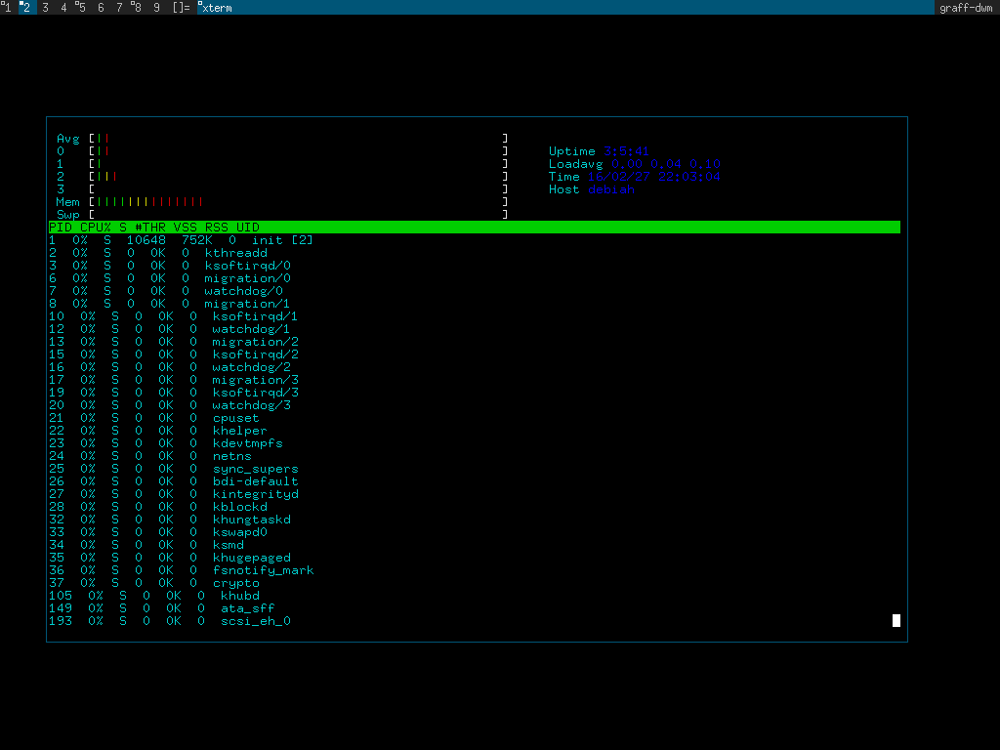

Grafland
DESCRIPTION:
Grafland is a collection of original software, written by
myself (Graff) and various contributors.
Navigating to a subdirectory of grafland and inspecting
the README will reveal more about what that particular
project contains.
HIER:
libc/
Standard C library components.
arbprec/
Arbitrary precision mathematics using strings.
-A bignum data type implementation.
Note: Developers probably want new_arbprec which is
being redesigned to support floating point.
libc/math/
Transcendental mathematics functions.
-Operate on and tranform double precision types.
-sqrt, atan, sin, jn, log and many more such math.h
function implementations. This library covers most of
the math.h / libm normative cases.
readline/
Readline line editing. An editline/readline like implementation.
This library is used to supply line editing and history to
the graff shell (Gsh) and grafland irc client. The latter
is supplied with a unique ircline() function (native).
curses/ & termcap/
Hexen, a minimal curses / conio style library. Hexen supplies
grafland's terminal capabilities and ultimately powers grafland's
readline/editline/ircline implementation, editor, irc client
and system monitor.
editor/
A native editor.
gsh/
A native shell.
irc/
A native irc client and library.
posix/
Userland utilities.
cp, ls, fetch, dd, find and many more, implemented from scratch
to subsets of POSIX specifications.
legacy/libsh/
Userland applications and libraries written in POSIX shell.
toolchain/
A cross compiling toolchain and build system. Similiar to
buildroot but with much simpler code,
BUILDING:
make
make install DESTDIR=$(pwd)/myroot
Install a single component of grafland:
cd grafland/posix
make
make install DESTDIR=/path/to/target
CROSSBUILDING:
Use grafland's internal gcc based cross compile system
to build itself or outside software. Links and build
specifics are supplied for 50 target packages.
make toolchain
export `make buildenvars`
make
make install DESTDIR=$(pwd)/myroot
For finer grained control over the cross toolchain
(such as changing architectures or using the tool-
chain to build other OS)), view the documentation
within toolchain/README and run the build system
from toolchain/.
PORTABILITY:
To some extent all of the components of grafland are standalone.
The core functionality (excluding the toolchain) only depends
on the standard C library and a few POSIX extensions to it. This
being the case it should work fine on Linux, mac, NetBSD and
FreeBSD.
CONTACT:
CM Graff cm0graff@gmail.com
UPSTREAM:
https://github.com/cmgraff/grafland
IMAGES:




REFERENCES:
http://pubs.opengroup.org/onlinepubs/9699919799
http://www.iso-9899.info/wiki/The_Standard
http://www.csie.ntu.edu.tw/~r92094/c++/VT100.html
RELEASES:
http://www.csit.parkland.edu/~cgraff1/grafland-0.2d.tar.gz
http://www.csit.parkland.edu/~cgraff1/grafland-0.2e.tar.gz
http://www.csit.parkland.edu/~cgraff1/grafland-0.2f.tar.gz
http://www.csit.parkland.edu/~cgraff1/grafland-0.2g.tar.gz
http://www.csit.parkland.edu/~cgraff1/grafland-0.3b.tar.gz
http://www.csit.parkland.edu/~cgraff1/grafland-0.3d.tar.gz